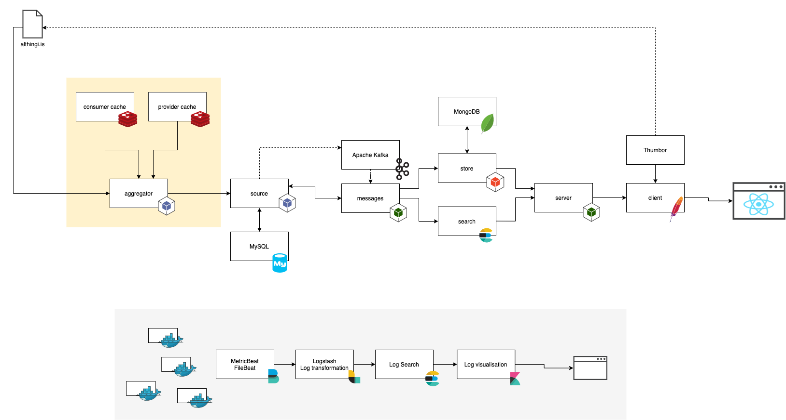

The system's components.
Aggregate
The Aggregator system is responsible for fetching data from althingi.is.
It is a PHP application that is run like a CLI tool. It will pass formatted data onto the Source. It is dependent on (Redis) caching servers.
Source

The Source system is the single-source-of-truth for all data. It is fed data from the Aggregator. The role of this system is to keep data integrity and provide an API for any downstream system interested in formated and validated althingi.is data.
It is a PHP application running behind an Apache HTTP server. It used MySQL as its data-storage. It has a built-in event system (event-driven-architecture) that will notify a broker (Apache Kafka) about any changes to its data-structure. The Messages is listening for these changes.
docker compose up source
It is also possible to instruct this system to (re)broadcast events. This can come in handy if you already have all the data in this system, but your Store is empty. All downstream systems (Message, Store) need to be running as well. To get a list of all available commands, run:
docker compose run --rm source index console
To index all congressmen in a give assembly, for example, run:
docker compose run --rm source index console:congressman --assembly_id=145
Messages

The (messages is listening for changes in the Source. When changes are detected, this system will evaluate the changes and could go back to The Source for additional information.
This system is fronted by a message-broker (Apache Kafka) that is listening for events from The Source, When a message is received, a Deno/TypeScript application will encode the message. It can go back to The Source for additional information before it relays the data to The Store or other systems. (Elasticsearch and Notification service are in the pipeline).
docker compose up zookeeper kafka
Search

Store

The store is responsible for maintaining a de-normalized/aggregated version of data stored in **The Store**. Its role is to contain computed values/data-structures for fast delivery.
This system is a Java SpringBoot web application. It uses MongoDB as its data-store. It gets its data from The Messages.
Client/Server

The client/server are two systems in one repo. Firstly, **The server** is a Deno/TypeScript application that sources data fom **The Store** and makes is available through a GraphQL API. In the future, this service will also source data from an Elasticsearch service.
Secondly, The Client is an Apache HTTP server that serves static assets such as JS, CSS and other assets to a web-browser. It also works as a reverse-proxy and behinds the sense sources cropped images from a Thumbor image server as well as relaying all graph-ql requests to The Server. It does everything a production-ready HTTP server would do like: gzip all assets, provides HTTPS/HTTP2 access etc..
docker compose up client server
Monitor/Log
Logging and monitoring is done by the ELK stack.
Filebeat and Metribeat are listening to all running Docker Containers. It will feed stdout and system-logs into Logstash, which will format the stream before handing it over to Elasticsearch. Monitoring the logs is done through the
Kibana interface.

There is a little bit of setup involved.
First.
All the containers need to be started
docker compose -f ./docker-compose.yaml up -d \
elasticsearch kibana metricbeat filebeat logstash
Next.
Metricbeat needs to create all required indexes and dashboards in Elasicseach/Kibana. (This might take a few minutes)
docker compose run metricbeat bash -c "metricbeat setup -E setup.kibana.host=kibana:5601 -E output.elasticsearch.hosts=[\"elasticsearch:9200\"]"
Last.
Indexes need to be initialized for system logging and monitoring
docker compose run search-init
Now everything should be set up and ready. Go to localhost:8081 to gain access to Kibana.
Note: If you are initializing indexes for the first time, you might get a 404 error saying that the index doesn't exist. That's OK, the script is trying to delete the old index template and create a new. Since this is you first time running the script, the old index template won't exist, but a new template will still be created.
Running the system.
You can run the system locally
docker compose -f ./docker-compose.yaml up \
source store messages client server -d
By default the docker-compose file does not expose any ports (except for the 80 port for Apache). While running this on a local machine for educational purposes, it is good to be able to poke into different services. For that, this repo provides an overwrite docker-compose.ports.yaml file that exposes all the default ports. Simply add a reference to it when starting the containers.
docker compose -f ./docker-compose.yaml -f docker-compose.ports.yaml up \
source store messages client server -d
| service | port | description |
|---|---|---|
| source | 8082 | The single source of truth API |
| source-db | 3306 | MySQL database powering source |
| store | 8083 | The aggregated datasource |
| store-db | 27017 | MongoDB powering store |
| client | 80 | Apache |
| server | 8084 | GraphQL server |
| queue | 15672 | RabbitMQ dashboard |
Now that the system is running, start the monitoring
docker compose -f ./docker-compose.yaml up \
elasticsearch kibana metricbeat filebeat logstash -d
Consult the section above get initialize the monitor system.
The docker-compose.ports.yaml file can be used to expose ports.
docker compose -f ./docker-compose.yaml -f docker-compose.ports.yaml up \
elasticsearch kibana metricbeat filebeat logstash -d
| service | port | description |
|---|---|---|
| elasticsearch | 9200 | The Elasticsearch cluster |
| kibana | 8081 | Kibana dashboard |
| metricbeat | - | no port available |
| filebeat | - | no port available |
| logstash | - | no port available |
Fetching data
The aggregator is used to fetch data. First run the globals script, it will fetch all required entries that are needed for individual assembly, but span across multiple assemblies: like committees, categories etc...
Next fetch all members. This ensures that all congressmen are present.
Lastly fetch the assembly.
docker compose run --rm aggregator globals
docker compose run --rm aggregator members
docker compose run --rm aggregator assembly 151
Clear cache.
When data is fetched from althingi.is, the entries are cached. If so required, the cache an be cleared by running:
docker exec -it althingi-aggregator-cache-consumer redis-cli FLUSHALL
docker exec -it althingi-aggregator-cache-provider redis-cli FLUSHALL
CI/CD
This repo contains the scripts directory. It contains scripts to stop a container, pull the latest
version of this container and then start it up again.
This is used in the CI/CD pipeline. Each service has its own script file which can be run, provided with the latest tag for a given service.